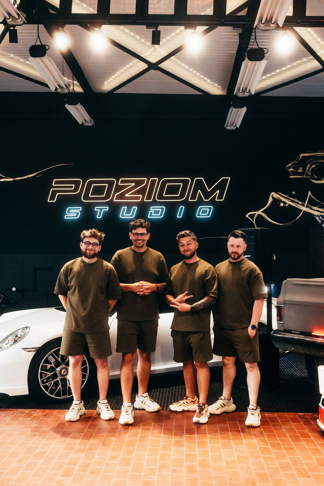
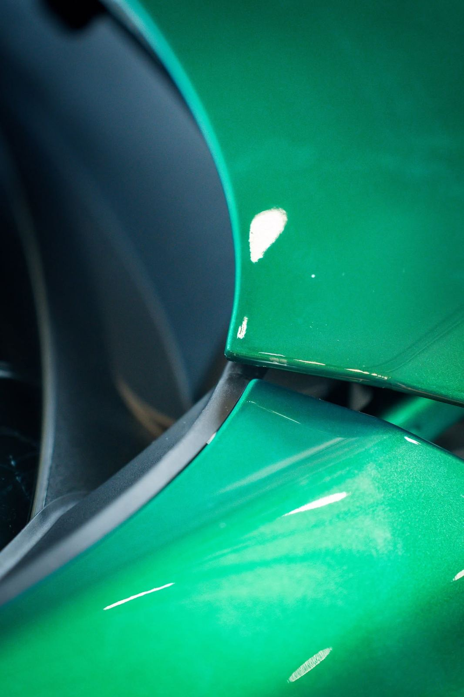

Folie ochronne PPF
Bezbarwna folia PPF chroni lakier przed odpryskami, rysami i chemią drogową — niemal niewidoczna, z właściwościami samoregeneracji. Pakiety od strefy przedniej po full body.
Bytom · Studio detailingu i ochrony lakieru
Folie ochronne PPF, detailing, usuwanie rys oraz renowacja i polerowanie lakieru. Pracujemy w tempie SLOW — bo jakość nie znosi pośpiechu.
Nasze usługi
Bezbarwna folia PPF chroni lakier przed odpryskami, rysami i chemią drogową — niemal niewidoczna, z właściwościami samoregeneracji. Pakiety od strefy przedniej po full body.
Pełna pielęgnacja wnętrza i karoserii: dekontaminacja lakieru, czyszczenie tapicerki, kokpitu i tunelu, przygotowanie auta do zabezpieczeń lub sprzedaży.
Precyzyjna korekta lakieru redukująca hologramy, mikrorysy i zmatowienia. Wielostopniowa polerownia przywraca głębię koloru i lustrzany połysk.
Kompleksowe odświeżenie lakieru wysłużonych i klasycznych aut — od korekty po zabezpieczenie, tak aby wygląd nadążał za mechaniczną formą pojazdu.
Zmiana wykończenia z połysku na satynowy mat — bez lakierowania. Efekt „frost" na oryginalnym lakierze, w pełni odwracalny. Zobacz efekt poniżej.
Nie wiesz, od czego zacząć?
Jak najczęściej użytkujesz auto?
Co najbardziej Cię martwi?
Ile lat ma Twoje auto?
Konfigurator i kalkulator
Wybrane strefy podświetlają się na diagramie
Elementy newralgiczne można dodać tylko do pakietu „Front”.
Mrożenie i zmiana koloru wymagają pełnego pokrycia pojazdu — zaznaczyliśmy „Full Body”.
Cena poglądowa — dokładna wycena po oględzinach auta w studio.
Filozofia studia
W Poziom Studio o jakości decyduje uwaga poświęcona każdemu detalowi, nie liczba aut zjeżdżających z podnośnika. Każdy samochód dostaje tyle czasu, ile faktycznie potrzebuje — od przygotowania powierzchni po ostatnią kontrolę pod światłem LED.

Efekt na żywo
Ten sam samochód, dwa charaktery. Wybierz auto i przeciągnij suwak, aby porównać efekt przed i po zabiegu.
Bentley Bentayga — zmiana wykończenia lakieru z połysku na mat (frost), zabieg w pełni odwracalny.
Technologia PPF
Folie PPF, które montujemy, mają warstwę samoregenerującą. Drobne rysy i zawirowania znikają pod wpływem ciepła — słońca lub gorącej wody. Sprawdź to poniżej.
Precyzja wykonania
Najedź kursorem na zdjęcie (lub dotknij na telefonie), aby przybliżyć krawędź karoserii i zobaczyć, jak precyzyjnie owijamy folię PPF.

Realizacje
FAQ
Ceny usług detailingowych są ustalane indywidualnie. Ostateczny koszt zależy od wielkości pojazdu, obecnego stanu lakieru oraz wybranego pakietu zabezpieczeń (powłoka ceramiczna, folia PPF, pakiety łączone). Zawsze proponujemy rozwiązania dopasowane do Twoich potrzeb i budżetu.
Przez telefon możemy podać jedynie szacunkowe „widełki” cenowe dla danego modelu auta. Dokładną wycenę jesteśmy w stanie przygotować dopiero po bezpłatnych, wizualnych oględzinach lakieru w naszym studiu, ponieważ każdy samochód wymaga innej ilości pracy i przygotowania.
Czas realizacji jest uzależniony od wybranego zakresu prac:
Zdecydowanie tak! To najlepszy moment na aplikację folii lub powłoki. Fabryczny lakier jest zazwyczaj miękki i podatny na uszkodzenia. Ponadto auta wyjeżdżające z salonu często posiadają już mikrozarysowania powstałe podczas transportu lub niefachowego mycia dealerskiego.
Tak. Nawet w przypadku aut prosto z salonu wykonujemy tzw. jednoetapowe odświeżenie (finish) lakieru. Pozwala to usunąć fabryczne niedoskonałości, zmatowienia po transporcie i wydobyć maksymalną szklistość, co jest niezbędne, aby powłoka ceramiczna idealnie związała się z powierzchnią.
Powłoka ceramiczna chroni lakier przed chemią drogową, solą, ptasimi odchodami, promieniowaniem UV oraz minimalizuje powstawanie mikrozarysowań (tzw. swirli) podczas bieżącego mycia. Nie stanowi jednak fizycznej bariery i nie uchroni auta przed mechanicznymi uszkodzeniami, takimi jak odpryski od kamieni czy zarysowania kluczem – do tego służy folia PPF.
Folia PPF (Paint Protection Film) to całkowicie bezbarwna, gruba i elastyczna folia poliuretanowa. To obecnie jedyne na rynku rozwiązanie, które fizycznie chroni lakier przed uderzeniami kamieni, otarciami parkingowymi i aktami wandalizmu. Dodatkowo posiada właściwości samoregeneracji – drobne rysy znikają z niej pod wpływem ciepła (np. słońca lub gorącej wody).
Oczywiście. Oferujemy popularny pakiet „Full Front”, który obejmuje elementy najbardziej narażone na uszkodzenia w trakcie jazdy: zderzak przedni, maskę, błotniki, reflektory oraz lusterka. Resztę auta możemy zabezpieczyć powłoką ceramiczną.
Tak, w celu ostatecznego potwierdzenia rezerwacji terminu i rezerwacji materiałów (np. folii ciętej na wymiar) pobieramy zadatek. O jego wysokości informujemy podczas ustalania szczegółów wizyty.
Tak! Przy odbiorze samochodu przekazujemy szczegółowe instrukcje, jak prawidłowo dbać o zaaplikowane zabezpieczenia (folie i powłoki), aby służyły jak najdłużej. Informujemy o tym, jakiej chemii używać, jak bezpiecznie myć auto i wręczamy niezbędne dokumenty gwarancyjne.
Kontakt
Napisz kilka słów o swoim aucie i zakresie, który Cię interesuje — odezwiemy się, aby ustalić termin i wycenę.